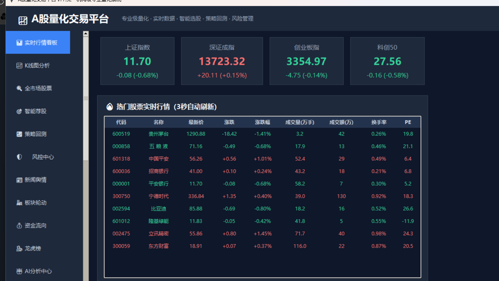
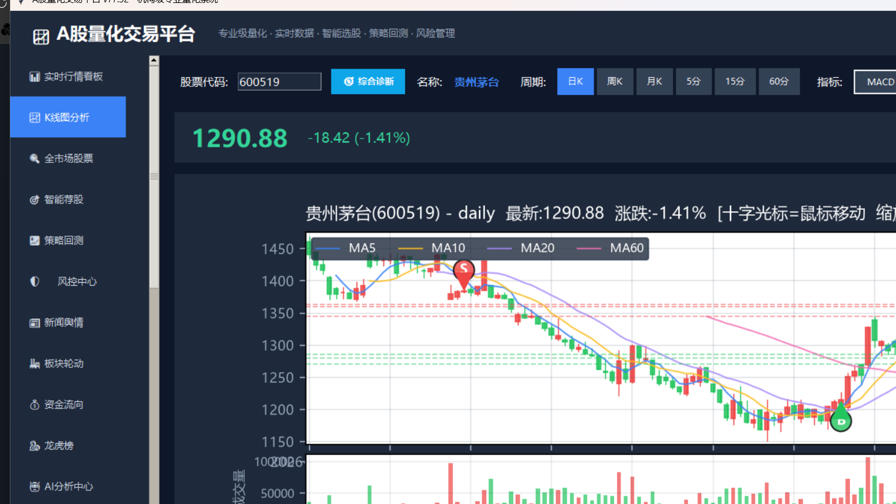
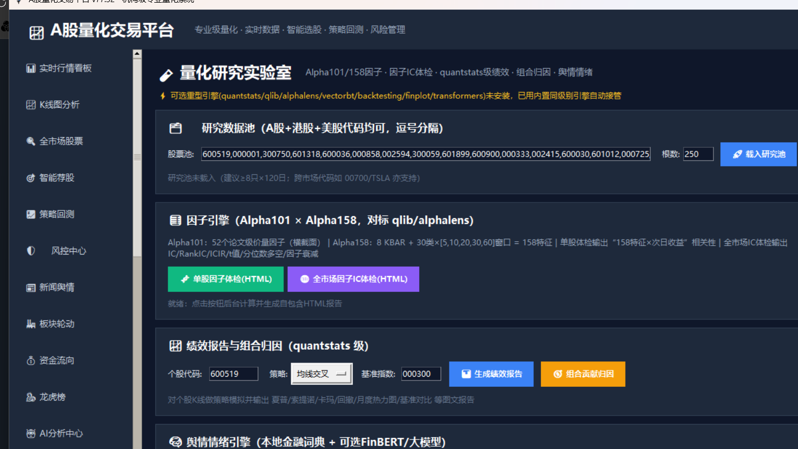
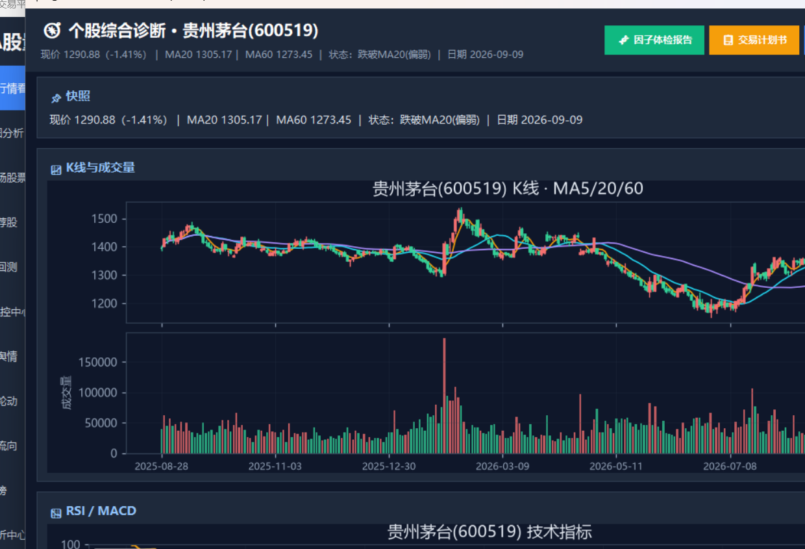
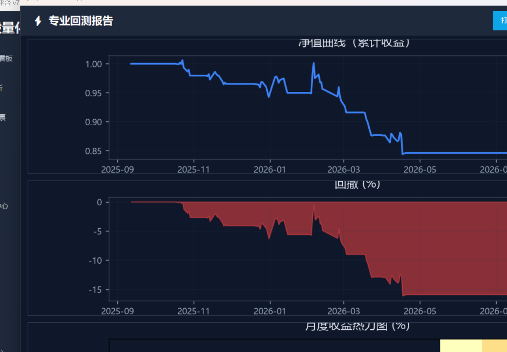

A股 · 港股 · 美股 · 多市场量化
A股量化研究工作站
从“研究一只股票”到“生成交易计划书”，一个软件闭环
一句话：行情只是入口，我们交付的是一条研究流水线——
多市场实时数据（断网绝不显示假价）→ 因子体检与自动挖因子 → 专业回测（Walk-Forward 防过拟合）→ AI 诊股与大模型解读 → 策略库 → 市场状态与职业交易计划书（仓位/止损/合规预检）→ 全程程序内可视化弹窗，不用去文件夹翻报告。
实时价·收盘自动标注Alpha101/158 因子自动挖因子
Walk-Forward 回测自然语言生成策略组合驾驶舱
交易计划书盘前简报·自动推送程序内弹窗看图
真实界面

📊 行情看板：多市场实时行情 · 市场情绪 · 自动刷新（每3秒）

📈 交互式K线：均线/成交量/技术指标，双击可一键“综合诊断”

🧬 研究实验室：因子/回测/计划书/驾驶舱，全部程序内可视化弹窗

🧭 双击任意股票 → 个股综合诊断：K线+RSI/MACD+因子快照

⚡ 专业回测：净值/回撤/月度热力图/绩效，程序内弹窗直出
能做什么
🗂 多市场全名单
全A股 + 港股 + 美股，实时接入；断网/接口失败时显示最近收盘并标注，绝不拿模拟价冒充实时。
🧬 研究实验室
Alpha101/Alpha158 因子、IC/RankIC 体检、遗传规划自动挖因子——把“感觉”变成可检验的统计。
⚡ 专业回测
多策略模板、参数寻优、Walk-Forward 样本外验证、手续费/滑点/止损——专治“回测骗自己”。
🤖 AI 融合
一句话生成策略、大模型诊股与情绪解读（内置免费/低价通道，无 Key 自动本地降级）。
🧭 组合诊断
多基准归因、风格暴露(RBSA)、MCTR/CVaR 风险分解、持仓效率象限。
📋 职业交易计划书
市场状态→技术快照→头寸计算→实盘合规预检→情景计划，把分析落成可执行清单。
为什么值得信任
- 仅实时 默认只显示实时/最近收盘真实数据；模拟数据默认关闭，绝不冒充
- 本地单文件 Windows 桌面单文件运行，数据本地化，无需自建服务器
- 7天试用 全功能免费试用，满意再考虑授权
- 研究工具定位 不荐股、不承诺收益，全程合规风险提示
📲 加微信领 7 天免费试用
扫码或复制微信号，添加后发送 “试用”，即可领取 7 天全功能授权码。
微信二维码占位（请作者上传 images/wechat-qr.png）
微信号：ll04041229w
（演示占位，正式微信号上线前请作者替换 index.html 里的 ll04041229w 与 wechat-qr.png）
常见问题
数据是真的实时吗？
是。行情来自腾讯/东财/新浪等公开实时接口：盘中自动刷新；收盘/休市显示最近一笔真实成交并标注“收盘”；接口失败时宁可显示最近数据并提示，也不显示假价。
支持美股港股吗？
支持。内置全A股+港股+美股名单，A股/港股/美股行情与K线均可查看与研究。
我是新手能用吗？
能。看行情、双击看综合诊断、一键出因子体检和交易计划书都不需要编程；进阶的因子与回测功能可按教程逐步学习。